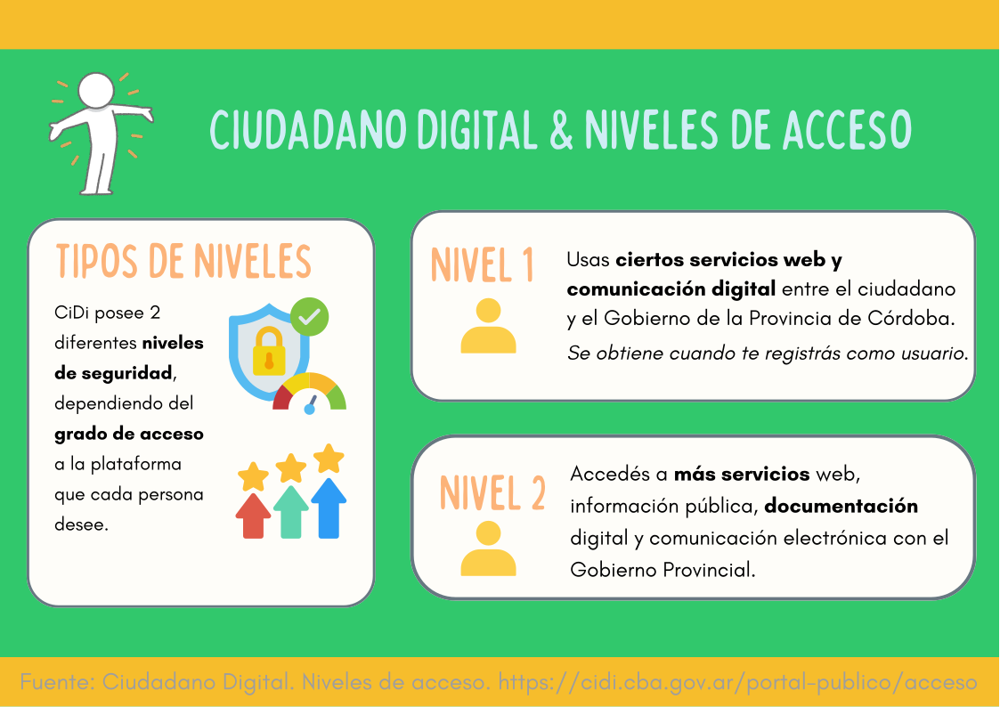
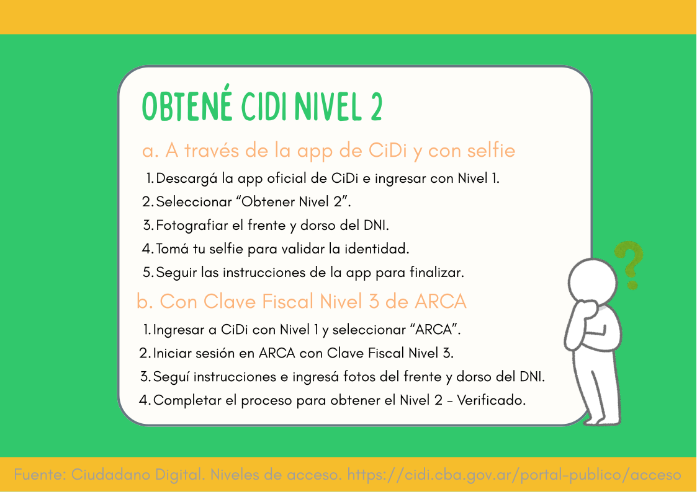

Capacitación CiDi · Módulo 2
Usuario de nivel 2 en Ciudadano Digital
Conocé los beneficios y funcionalidades de ser un usuario de nivel 2 en la plataforma Ciudadano Digital.
1. ¿Que es nivel 2?
Conocé qué significa ser nivel 2

2. Cómo ser nivel 2
Material audiovisual

Verificá tu conocimiento
Seleccioná una opción por pregunta y enviá tus respuestas para comprobar tu resultado.